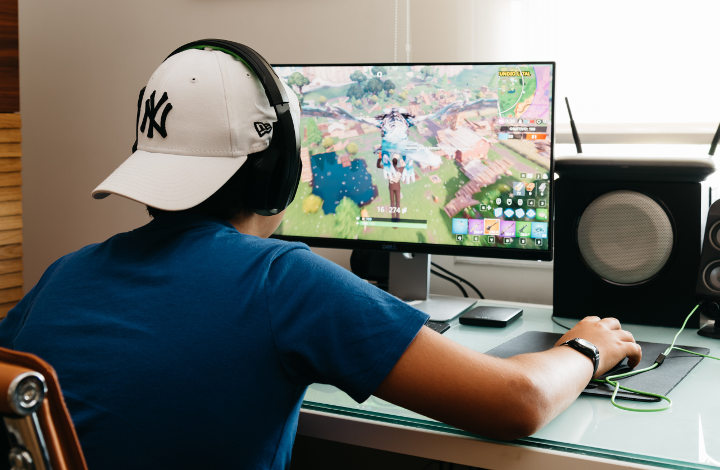
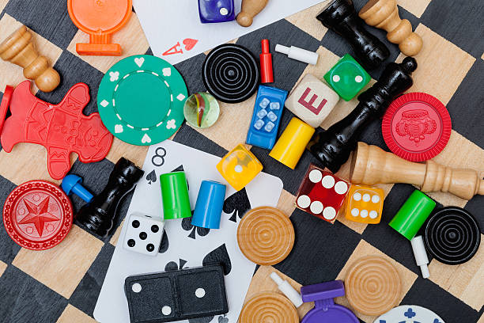
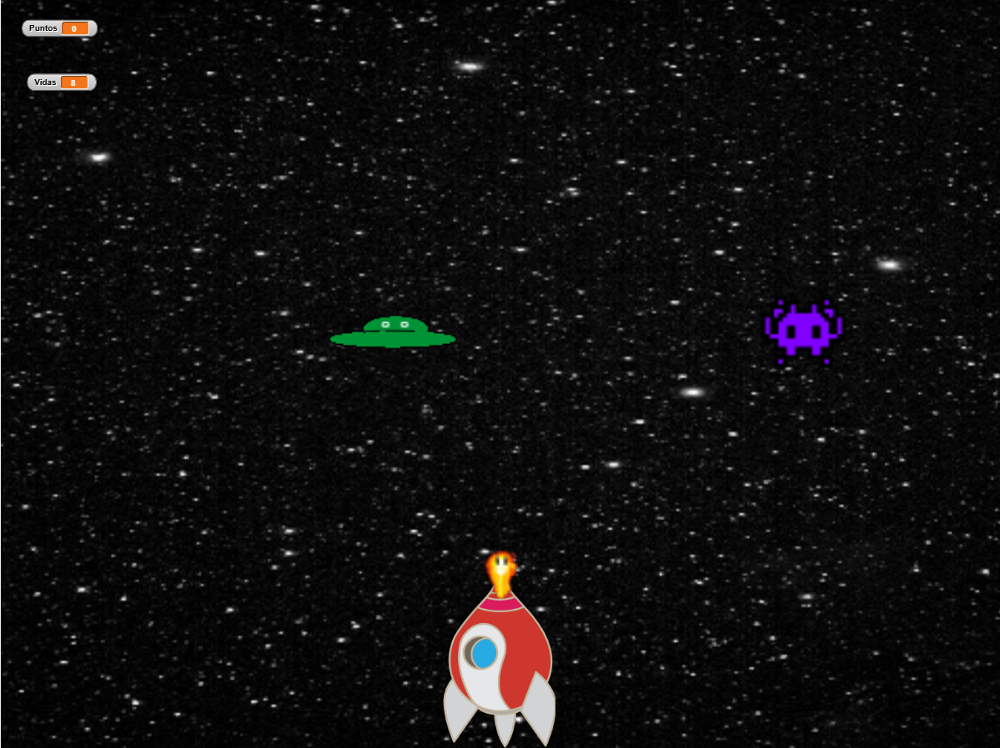
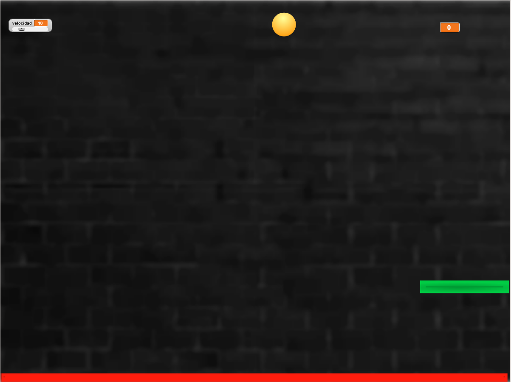

 |
Soy Raúl de la Torre Muñoz, tengo 17 años y soy un estudiante de 2º de bachillerato en IES Francisco de los Cobos. Tengo planeado estudiar alguna ingeniería cuando termine este curso como una ingeniería informática, electrónica o mecánica ya que me gustan los temas de las máquinas y programación, incluso tenía planeado ser desarrollador de videojuegos, pero para conseguir empleo en algún grupo de desarrollo, antes tengo que hacer un videojuego yo solo y que convenza a la empresa donde quiera trabajar.
|
|
 |
Hace unos años, en la escuela hice unas prácticas simples mediante la programación de bloques de Snap:
| Nombre | Descripción | Imagen | Enlaces |
| Juego de nave | Este programa es un juego en el que van apareciendo marcianos desde arriba de la pantalla y tú presionando espacio y moviéndote de derecha a izquierda, disparas y te mueves, ganando puntos cuando matas a los mancianos y perdiendo hasta 10 vidas si te tocan. |  |
Juego de la nave |
| Juego de ping pong | Este juego va de que le das a la pelota con la barra verde que mueves con el ratón, y la pelota rebota por la pantalla, el objetivo es evitar que toque lo rojo de abajo y pierdes vidas si lo hace. También puedes cambiar la velocidad de la pelota arriba a la izquierda. |  |
Juego de la pelota |
| rauldelatorre2008@gmail |
Sitio web desarrollado por Raúl de la Torre Muñoz, 2026.